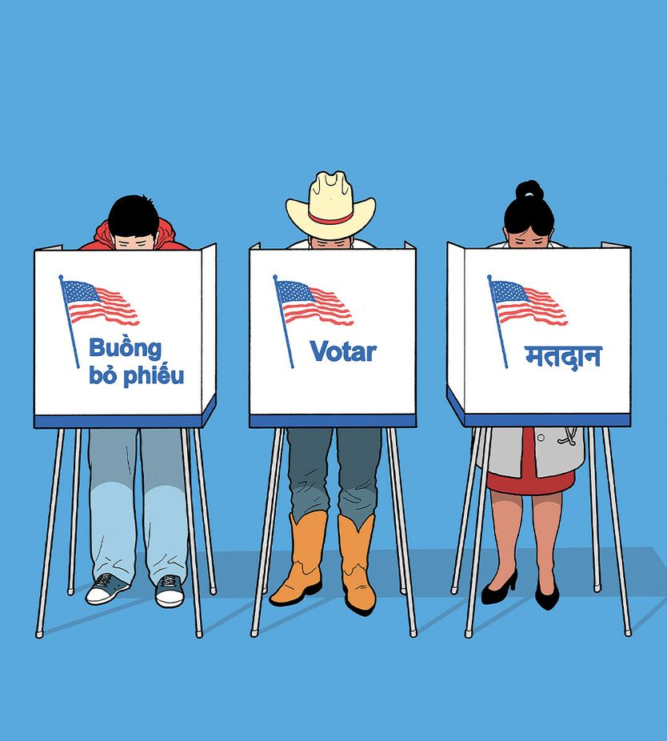

正在把美国政治改好的那批人
The Americans changing politics for the better
拉美裔与亚裔已成为美国最有活力的摇摆选民

- 美国政治的顽疾是党派对立：选民按种族、学历、地域自我归类后，两党更愿意把本党支持者撩到长期亢奋，而不是去争取对方选民，结果政治被拽向两极、妥协受罚。
- 拉美裔与亚裔合计已占美国选民 21%，自 2006 年提高 9 个百分点；他们意识形态更流动、更易改换投票对象，2024 年大幅右转、2025 年初又最快掉头，是典型的摇摆群体。
- 作者判断：这批人立场温和、看重勤奋与致富，若两党因此被迫争取中间选民，选举将少由初选铁杆决定、多由普通选民决定，美国会更繁荣也治理得更好。
中期选举历来是对现任总统的公投，但很少有在任者如此不顾自身低支持率、执意站到聚光灯下。选战收尾阶段，特朗普在共和党铁票区抢着开造势大会——这既暴露了本党的脆弱，也说明他对自己号召力深信不疑。然而在聚光灯之外，一件更出人意料也更重要的事正在发生：拉美裔和亚裔已成为美国最有价值的选民。
美国政治的顽疾是尖锐的党派对立。随着选民按种族、学历和地域自我归类，两党花在争取对方选民上的时间越来越少，花在把本党支持者撩到长期亢奋上的时间越来越多：70% 的共和党人对民主党人心怀敌意，民主党人则以超过 80% 的比例回敬。结果是政治被拽向两极，妥协受罚，把人激怒比把事情办成更吃香。
拉美裔与亚裔选民是遏止这股恶化趋势的最大希望。他们已成为美国关键的摇摆选民，对全国各地选情的影响超出其人口比例。与其他群体相比，他们人数增长更快、意识形态更流动、诉求更少撕裂性。这意味着他们不仅在这届中期选举、而且在未来许多次选举中，都可能对美国是件好事。
11 月 3 日最大的变量是特朗普的不得人心。他的全国净支持率为 -27 个百分点。总统本人预测会取得「创纪录的」胜利，但本刊预测模型认为民主党夺回众议院的概率为 95%、拿下参议院为 54%。民调显示，从通胀到移民，特朗普在每一项议题上都处于水下。他的致命弱点是：选民把账单上涨归咎于他偏爱关税，以及他选择对伊朗开战。
这股反弹在堪萨斯、艾奥瓦等州为民主党打开了缺口——过去在这些州设想民主党获胜，足以让共和党战略师被炒鱿鱼。2024 年投给特朗普的失望农村选民这次可能干脆不去投票，以抗议高企的柴油价格和糟糕的农产品行情。民调称民主党正在收回年轻人，并一点点撬走白人工人阶级。
美国多一些摇摆州是好事。如果民主党能在堪萨斯、得州这样的地方赢，执政优势可能让它们在今后的选举中也具备竞争力。最能体现「把政治打开」潜力的群体，莫过于拉美裔和亚裔。
原因之一是人口结构。他们在人口中的比重不断上升——尤其是拉美裔，人数是亚裔的三倍。自 2006 年以来，两者合计占选民的比例提高了 9 个百分点，达到 21%。他们内部也高度多元。胡志明市移民的孙辈与初到班加罗尔的新移民想法并不相同，两者都难以塞进人们熟悉的民主—共和两党模板。
他们也更可能改换投票对象。2012 年民主党自认已把拉美裔和亚裔锁进票仓，2024 年的叙事则变成他们正在「特朗普化」。现在清楚了：他们一直是摇摆选民。
2020 到 2024 年间白人选民变化不大，拉美裔和亚裔却大幅右转；而到 2025 年初，又是他们最快掉头反对特朗普。与 2024 年相比，民主党在拉美裔中的支持率优势上升 17 个百分点、亚裔上升 14 个百分点，白人选民为 10 个、黑人选民为 5 个。从纽约郊区到佛罗里达的众议院选情，以及阿拉斯加、堪萨斯、得州的参议院之争，很可能都由他们决定。
部分解释是：这些选民正是「奋斗型美国人」的典型，愿意拼命干活往上走。食品和燃料涨价对拉美裔打击尤重，住房成本则影响亚裔。拉美裔创业的概率是白人选民的两倍多，亚裔在受教育上投入的时间更长。
他们中许多人是新移民或移民子女，观点尚未沿党派固化。与其余选民不同，拉美裔和亚裔若在某一议题上偏左，并不必然认同其他左翼立场。同样，希望南部边境有秩序，不等于支持那种让拉美裔雇员不敢上班的强硬执法。
相反，许多人立场温和。他们对文化战争和极化政治兴趣寥寥。他们在意的经济政策，与两党用来煽动基本盘的部落式口号并不合拍。堕胎和跨性别权利上的政策被定在两极，经济治理却恰好适合摇摆选民那种讲求实效、看重公共利益的偏好。
几乎任何让两党有理由去争取中间的做法都利好美国，尤其是当它关乎勤奋与致富这些美德时。民主党需要一套能取胜的经济论述和一份连贯的移民方案。共和党则应当抛弃凶猛的驱逐行动，以及那种因拉美裔和亚裔不是「血统上的美国人」而贬低他们的丑陋极端民族主义。
因此所有美国人都应欢迎这些新的摇摆选民。有了他们，更少的选举会由初选中的铁杆党员决定，更多的会由大选中的普通选民决定。如果政客靠执政办成事情能拿到更多政治回报，他们或许就会少花点时间去妖魔化对手。如果经济显得更重要、文化战争显得更次要，美国会更繁荣、治理得更好。拉美裔和亚裔移民想要一个出头的机会，他们的选票将帮助美国与他们一起兴旺。■